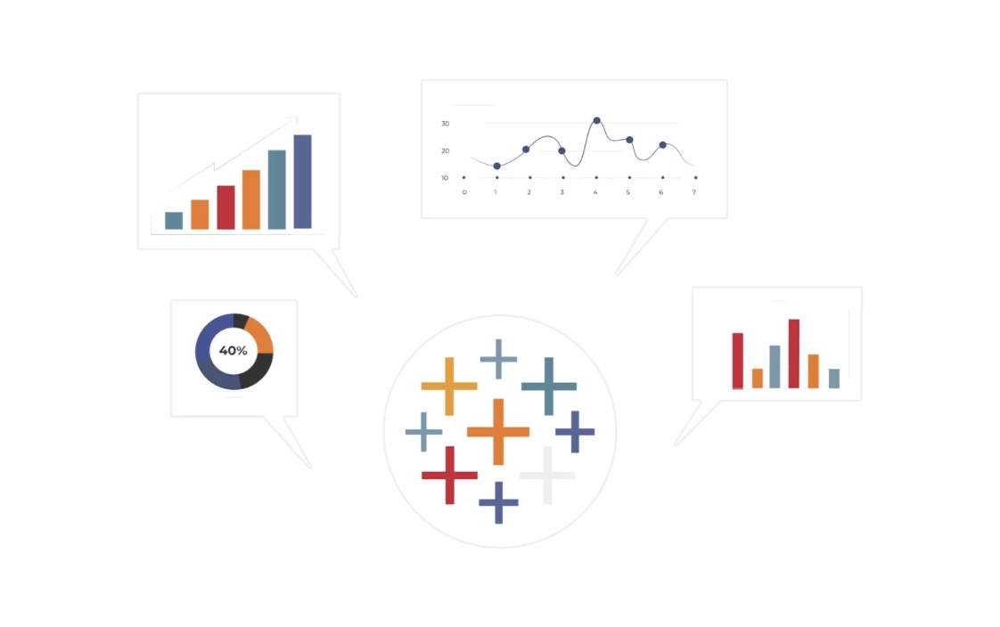

This project looks at a company's Human Resources data from 2000 - 2020. We prepare the data for analysis, by standardising formatting and data types, while also identifying and excluding any incorrect records in our dataset. Then, we analyse the HR data, and visualise our findings on a dashboard (Tableau).
This MySQL project looks at historical sales data for 45 Walmart stores, to identify the highest performing branches and products, analyse sales trends across various product lines and times (regarding times of the day, weekdays, months), and gain insights into the quality of service experienced by customers in these stores. Then, we visualise our findings through dashboards (Tableau).
This project examines a tabular dataset containing records from the Boston Police Department's crime incident reports (2015-2018), including details such as, the type, time, and location of the incidents. For this project, I used Google Colab, leveraging its Jupyter Notebook interface to write and execute Python code.
This Excel data visualisation project looks at Coffee Sales data, which gives information on customers, orders recorded, products (coffees). The output of this project is an interactive Excel dashboard, allowing viewers to engage with the timeline and slicers, and explore how the coffee sales for the 4 different coffee types (Arabica, Excelsa, Liberica, Robusta) fluctuated over time.
This project examines a tabular dataset listing all movies and TV shows availaible on Netflix. We use Google Colab, leveraging its Jupyter Notebook interface to write and execute Python code.

Tableau Dashboards for projects on Human Resources data, Walmart Sales analysis.